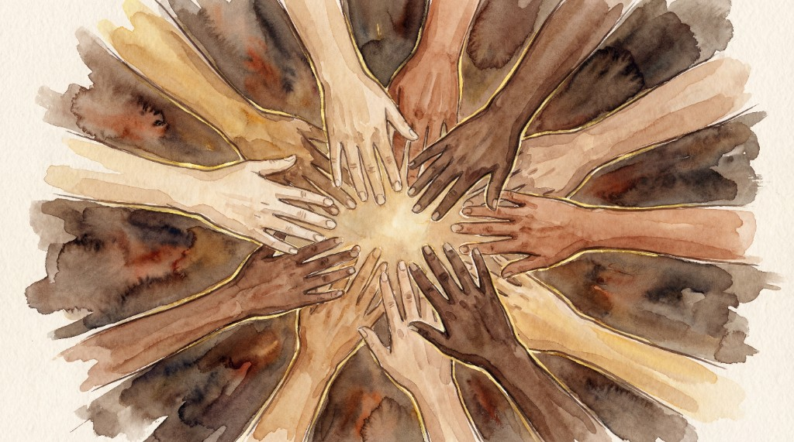
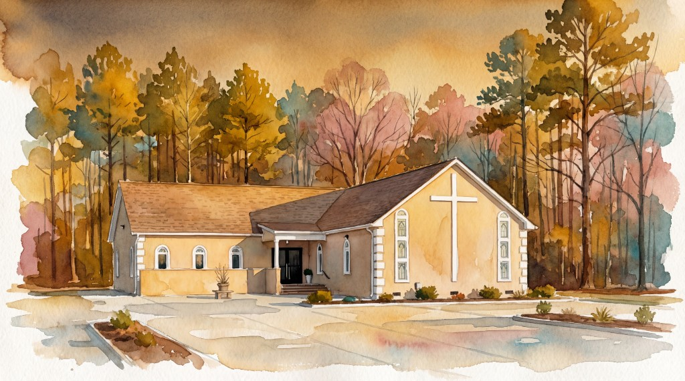
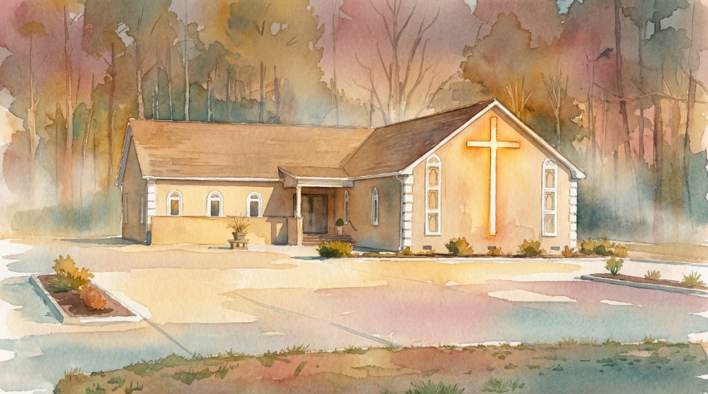

Discipleship
Bible-centered growth pathways for new believers and mature disciples through teaching, prayer, and mentorship.
Ministries
Ministry at NCC is built around discipleship, prayer, family care, and leadership development. Every area is designed to help people encounter Jesus and walk in practical faith through the week.
Bible-centered growth pathways for new believers and mature disciples through teaching, prayer, and mentorship.
Consistent prayer support and spiritual care for families and individuals walking through every season of life.
Intergenerational discipleship that strengthens parents, youth, and children in biblical identity and purpose.
Practical development for current and future leaders who serve with humility, clarity, and biblical conviction.

Faith-filled prayer gatherings where people are strengthened and encouraged.

Worship moments focused on Christ, unity, and spiritual renewal.

Biblical teaching that drives practical growth in everyday life.